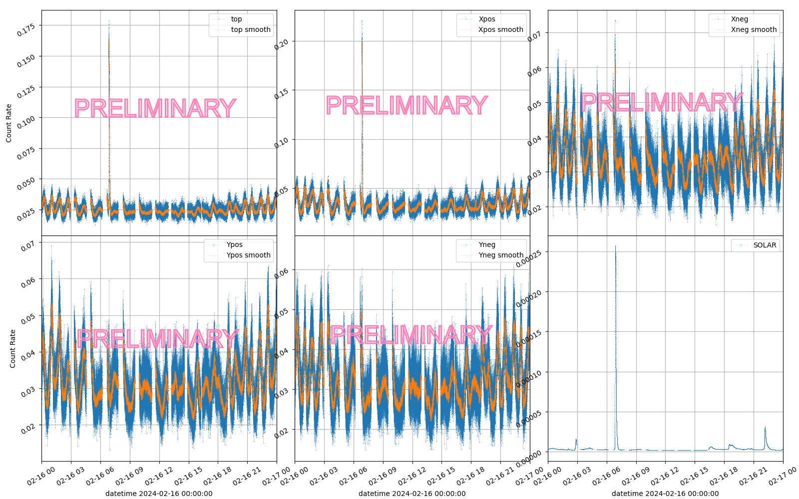
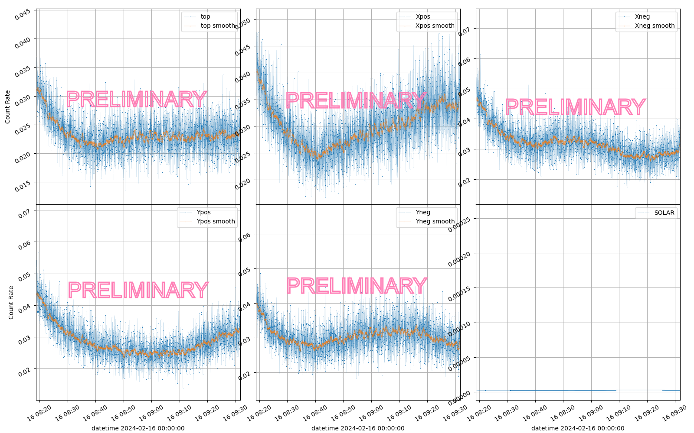
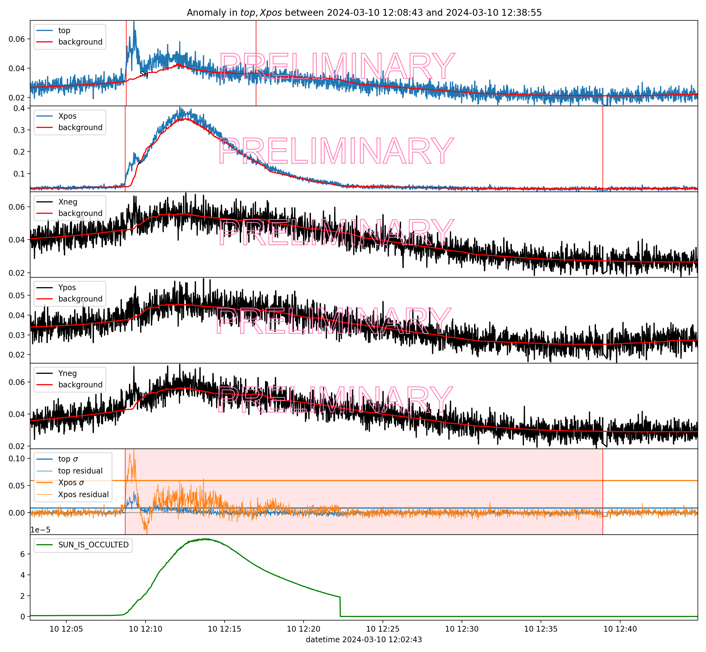
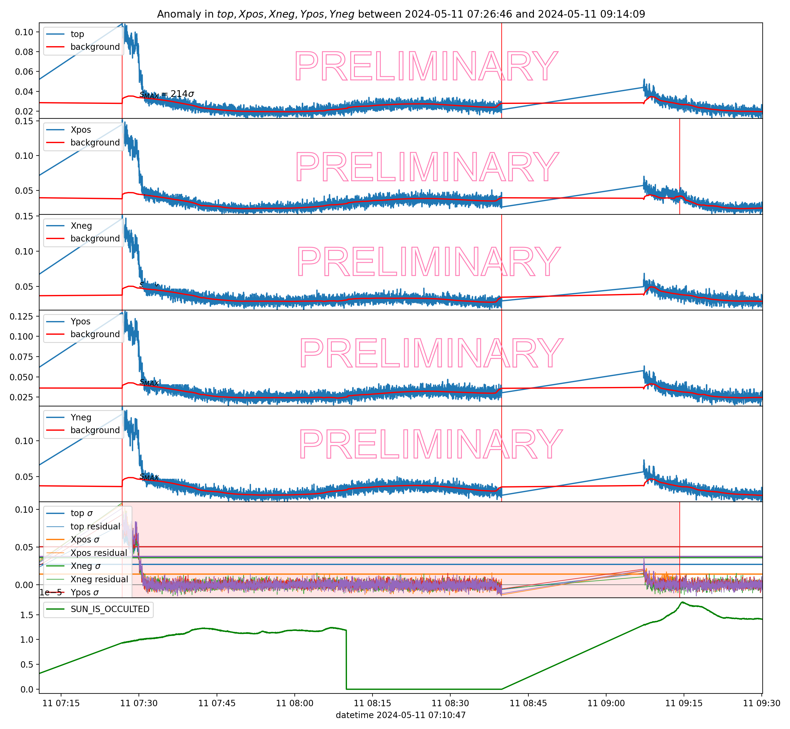

Multimessenger astrophysics relies on multiple observational data channels, requiring efficient methods to analyze
events of astrophysical origin. Given the increasing volume and complexity of data from modern observatories,
Machine Learning techniques have become essential for efficiently identifying signals.
This project applies Machine Learning techniques to time series data from the Anti-Coincidence Detector on
the Fermi Gamma-ray Space Telescope, with the aim of improving the detection of high-energy transient events such
as Gamma-Ray Bursts. The poster begins by introducing the motivations of this work; followed by an overview of the
Anti-Coincidence Detector and the satellite data itself. A Feed-Forward Neural Network is employed to learn temporal
patterns in the time series and predict the background these series. It is followed by the implementation of a
triggering algorithm for anomaly detection, which identifies significant deviations from the background,
signaling the presence of astrophysical transients in the ACD data.
This tool can be adapted for various signals, making it applicable across different contexts in multimessenger studies.
1. Motivation
This work presents a versatile and flexible Machine Learning-based software designed to
address two challenges in the analysis of time series data:
modeling the temporal behaviour
within time series datasets to predict the evolution of time series;
identifying anomalies within those series;
2. What is The Anti-Coincidence Detector?
The Anti-Coincidence Detector (ACD) is a system on board of Fermi used to reject background
signal such as charged-particles from the Large Area Telescope signal.
The ACD is composed of 89 plastic scintillator tiles that detect particles and photons, distributed in the five faces. The signal in each face
looks like this:

3. Dataset
The dataset used for the training and testing of the software is composed of the time series of the five signals in the ACD and a set of input features:
the parameters in the weekly Spacecraft files (FT2) from the Fermi Collaboration;
the Solar Activity retrieved from the Geostationary Operational Environmental Satellite (GOES) X-Ray Sensor (XRS);
the signals of the five faces in the ACD.

4. Background Prediction with Neural Networks
The software was developed starting from the data of the ACD as a playground.
The software implements a multioutput Feed-Forward Neural Network (FFNN) to model the temporal behaviour of the time series.
In the context of the ACD, the training of the neural network is performed on a dataset having as labeled output the ACD signals in the dataset and the input parameters:
The NN implements the Mean Absolute Error as a Loss Function, which is less sensitive to outliers in the dataset. In general the MAE is defined as follows:
where \(N\) is the number of samples in the dataset, \(y_i\) is the true value (ground truth) of the signal for the sample \(i\), and \(\hat{y}_i\) is the predicted value of the signal for that sample.
Applied to a multioutput NN with estimator function \(f_j\):
where \(\textbf{x}_i\) is the input feature vector for sample \(i\), \(j\) is the index of the \(M\) outputs (the 5 signals in the ACD), and \(f_j(\textbf{x}_i)\) the estimated value for the
\(j\)-th output variable for sample \(i\), produced by the neural network with estimator function \(f\).
The loss function is minimized with the average of the loss functions for each sample and each signals of the ACD:
The NN is trained with the Adam optimizer, a stochastic gradient descent method that is based on adaptive estimation and
a learning rate scheduler that reduces the learning rate when the loss function does not improve.
5. Results of the NN
The FFNN was trained on a dataset from February 2024 to July 2024, and then tested on different periods with known solar flare events.
Even if the (present) period occurs during a solar maxima and therefore there are plenty of solar flare events, the model still has some problem in accurately describing the flares.
6. Identification of anomalies: Gaussian FOCuS
The software implements a triggering algorithm based on the Gaussian FOCuS method to identify anomalies in the time series
with a Gaussian distribution.
The FOCuS (Functional Online CUSUM) algorithm is equivalent to running methods of moving windows for all possible sizes, so that duration of the anomaly is not a parameter of the algorithm,
but rather assessed by the algorithm itself. The standard CUSUM statistic uses the partial sum of score statistics to time n.
The algorithm takes each true signal of the ACD and the prediction of its background and calculates the statistic for each signal.
When the statistic is above a certain threshold, the algorithm triggers an event for the face. Successive events are merged if they are close in time (180 seconds).
When more then one face triggers an event, the algorithm merges the triggers to create a single anomalous event.
7. Results of the Triggering Algorithm


Left: presumably a LOCLPAR event during a solar flare (as described in the Fermi GBM Trigger Catalog) .
Right: a LOCLPART event after the exit from the South Atlantic Anomaly (as described in the Fermi GBM Trigger Catalog) .
8. Conclusions and outlook
The development of ACDAnomalies is ongoing to offer a versatile and flexible tool
for the anomaly detection in time series data.
FFNN-based models can be used to describe complex dependencies, such as the ones dependent on the environment
in which the Fermi satellite is immersed.
Work is still required to assess the performance of the neural network in big datasets and in different conditions (e.g.
periods in which the solar activity is particularly high).
The triggering algorithm is an important part of the software, and it is still under development.
Future development of ACDAnomalies aims to support both integration within the Fermi software stack and its
use as a stand-alone package.
Acknowledgements
The work presented in this contribution is performed in the framework of Spoke 0 and Spoke 3 of the ICSC
project - Centro Nazionale di Ricerca in High Performance Computing, Big Data and Quantum Computing,
funded by the NextGenerationEU European initiative through the Italian Ministry of University and
Research, PNRR Mission 4, Component 2: Investment 1.4, Project code CN00000013 - CUP I53C21000340006.
References
Atwood et al., THE LARGE AREA TELESCOPE ON THE FERMI GAMMA-RAY SPACE TELESCOPE MISSION, The Astrophysical Journal, 2009
Gaetano Romano et al., Fast Online Changepoint Detection via Functional Pruning CUSUM statistics, Journal of Machine Learning Research, 2023
Crupi, R., Dilillo, G., Bissaldi, E. et al., Searching for long faint astronomical high energy transients: a data driven approach, Exp Astron 56, 421–476, 2023